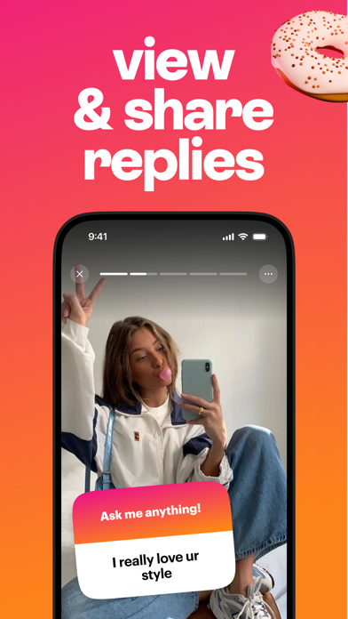

NGL Pro 订阅值不值得掏？我把免费版和 Pro 能用的功能拆给你算
NGL 匿名提问 App 免费版和付费版到底差在哪？按轻度、主力、重度三类使用强度分别算账，看完三秒对号入座。
开头：它到底值不值得掏钱？
我是去年冬天开始用 NGL 的——朋友圈里有人发了贴纸，点进去就是匿名提问页，朋友躲在屏幕后面问我"最近有没有偷偷哭过"，我躲在另一块屏幕后面答。那一瞬间我就懂了为什么这款 App 能在年轻人圈子里爆火：去官网逛一圈就明白了，它就是把一个你永远不好意思当着朋友面问的问题，塞到了一个连账号都不需要注册的网页里。
但好玩的地方总藏着一个熟悉的套路——免费能用，但它给你看的功能清单里总有几行被虚线圈起来，旁边写着"Pro 订阅解锁"。我纠结了一个礼拜才下定决心付了这笔钱，然后又用了两个月才想明白：到底哪些人在为这玩意儿真金白银买单，哪些人纯属交了智商税。
这篇就是我的账本。
定价拆解：免费版给什么，Pro 多什么
先把账面上的东西摊开。从NGL下载就能拿到完整的免费版，装完就能直接玩——它的订阅模式挺简单，按周或按月两种档位，买断选项暂时没看到，这也是我觉得它定价有点鸡贼的地方：周付给你"体验一下不贵"的错觉，但 NGL 官方自己的帮助中心写得很清楚，发送者提示、更多游戏卡主题、消息统计面板、无广告浏览这几项是 Pro 独占的。
免费版能拿到的东西其实已经不少了：匿名提问链接、所有基础游戏卡（三个词、Never Have I Ever、情绪反应那几套都在）、通知推送、收件箱、公开回复功能——这些核心玩法一个没拦。换句话说，你完全可以一分钱不花玩得转这款 App，发链接给朋友问问题、收回答、甚至公开回复，全都畅通无阻。
Pro 多出来的，说白了就是"猜是谁发的"这件事的模糊线索。官方的隐私政策很清楚：不存发送者姓名、不透露社交账号、合法程序之外不会帮你揭示身份。但 Pro 订阅里有个叫「发送者提示」的东西——它不会告诉你这个人是谁，但会给你一些方向性的模糊标签：大致位置（比如"东南亚"或"北美"这种大区划分）、设备类型（iOS / Android / 网页）、以及这个发送者是不是也在用 NGL Pro。
我特意翻了NGL文档里的隐私说明页，有个细节挺值得说的：这些提示被官方明确界定为「非身份信息」，意思是哪怕你开了 Pro 也别指望靠几个标签就能锁定你朋友圈里的那几个人。但话说回来——你本来就知道是哪些朋友在点你的贴纸，加上一个"iOS 用户"或"网页端来的"，真的能帮你缩小范围。
剩下的 Pro 功能就比较常规了：统计面板会告诉你每条提问被多少人看过、有多少人回答；无广告就是字面上的意思；更多游戏卡主题是锦上添花。没有哪一项是"不开 Pro 你就用不了核心功能"那种级别的硬门槛。

算账：三类人分别怎么判
我把 NGL 的用户粗略分成三档来算。
轻度使用：偶尔发一张贴纸就忘
这类人一个月分享 NGL 链接不超过三回，发完就等着收回答，收完就关掉。Pro 对这类人几乎没有价值。
原因很简单：发得少意味着回答量本来就不大，你翻一翻收件箱就能读完，统计面板帮你数了多少浏览量根本无所谓；朋友发过来的匿名提问你大概能猜到是谁，加上一个"设备类型"的提示也不会让你的判断更精确；游戏卡你就玩那两三张基础款也够了。
时间账算一下：免费版每次使用大概省下 30 秒（不用跳过广告），但为这 30 秒花每周那个钱，一年下来够你喝三顿奶茶。轻度使用的朋友，别付。
主力使用：每周发个两三次，真的好奇谁在问
这是我自己的档位——我大概每周会在 Instagram 快拍里发两三次贴纸，有时候是"最近推荐一部电影"，有时候是比较私人的问题。一个月下来能收到几十到上百条回答，这里面总有那么几条让我好奇"到底是谁敢说这个"。
Pro 对主力用户是有用的，但不是必须的。发送者提示给我的帮助比我预想的大——有一次我收到一条特别扎心的回答，Pro 提示是"网页端来自国内"，我大概就知道是我那个不怎么用 Instagram 的室友；还有一次提示"iOS 用户"，我就锁定了朋友圈里那几个 iPhone 用户。这些线索不保证对，但足够让我的好奇心被满足个七八成。
时间账：每周省下的翻找时间 + 满足好奇心的快乐，折合下来每周那个订阅费我觉得值。但我也得说——如果你真的特别想知道是谁发的，最笨也是最可靠的方法是直接在公开回复里@你怀疑的那个人的社交账号，看他会不会看到。不用 Pro 也能玩这招。
重度使用：把 NGL 当社交渠道在经营
我见过有人每天发贴纸，把 NGL 当成一个匿名树洞来接收朋友的真心话，甚至有人用它来做小范围的互动活动。Pro 对重度用户是刚需。
统计面板是最值钱的那一项——你能看到哪张贴纸的浏览量高、哪种问题得到的回答多，下次发的时候就知道什么内容能引起更多互动。如果你是做内容的、或者想靠 NGL 维持朋友圈的活跃度，这个数据面板就是你唯一的反馈机制。加上无广告和更多游戏卡主题，Pro 订阅在重度使用场景下会让体验顺滑很多。
替代方案：不付这笔钱还有什么路
坦白说，NGL 在匿名提问这个赛道里没有像样的免费替代品——它靠的是 Instagram 生态的绑定，你换一个 App 发链接，朋友们可能根本不会下载。所以"换同类免费工具"这条路基本上走不通。
真正的替代方案有两条：
第一条是降低使用频率。如果你只是偶尔想玩一下，免费版完全够用。忍着两周只发一两次，等那点好奇心攒够了再开一次 Pro，用完就取消订阅。NGL 不拦你随时取消，这点比很多订阅制 App 良心。
第二条是换个玩法满足好奇心。你想知道是谁在匿名说话，不一定非要靠 Pro 的设备提示——公开回复时@你怀疑的人、或者把那条回答截图发给几个好朋友问"这是不是你"，这些笨办法在我身上比 Pro 提示更准，因为朋友们会在评论里自己承认。
结论：三秒对号入座
最后收个底，给每类人一个直接的判断：
- 闭眼付：把 NGL 当日常社交渠道、每天都在发、真的靠它维持朋友圈互动的人。Pro 的统计面板和发送者提示对你的使用体验是质的提升。
- 再等等：每周发两三次、好奇但没到离不开的主力用户。先免费玩一个月，等你真的遇到那种"这条回答我必须知道是谁发的"的时候再付——这种冲动一年能有个三五六次，按需开通比月付划算。
- 永远不用付：一个月发不到三回、发完就忘、收到回答随便看看的轻度用户。免费版给你的已经是完整的核心玩法，Pro 加的那些东西对你来说都是锦上添花，不是雪中送炭。
我自己现在是主力档位，付了两个月了，没打算退，但也不会推荐身边没这个使用习惯的朋友跟着开。订阅这件事最大的坑就是"别人都有所以我也想要"——你先搞清楚你用它到底是为了什么，再决定那个钱值不值。

资料在哪儿能拿到
想自己去翻这些细节、或者想看看社区里其他人怎么玩的，文档目录在GitHub、Gitee、GitCode上都同步了一份，国内访问 Gitee 或 GitCode 会更快。